비서-2급 (2015-11-22 기출문제)
1과목: 비서실무
1. 다음 중 한국 비서협회의 전문비서 윤리강령에 대한 예시 설명으로 가장 적절한 것은?
- 정직 – 근무시간에 충실하여 가능한 야근은 하지 않도록 한다.
- 충성심 – 조직이나 회사의 충성심이 상사에 대한 충성심보다 우위임을 잊지 않는다.
- 신뢰감 – 상사와 신뢰형성을 위해 상사의 개인적 목적을 위한 업무도 할 수 있어야 한다.
- 비밀엄수 – 상사의 일정은 대외비로 보안을 철저하게 한다.
(정답률: 30%)

2. 다음 사례를 통해 알 수 있는 비서직의 장점으로 가장 적절치 않은 것은?
- 김미정씨는 보석전문회사의 비서직으로 근무하면서 얻은 지식과 꾸준한 자기계발과 교육이수를 통해 보석감정사로 활동하게 되었다.
- 전자회사의 비서로 근무하던 이수현씨는 개인적인 사유로 지방으로 이사를 하였으나 경력을 살려 그 지역에 소재하고 있는 해당기업 부속연구소로 옮길 수 있었다.
- 3년차 비서 이경미씨는 같은 연차의 동기들에 비해 회사내외의 중요한 인사들과 교류를 맺고 상사의 시각에서 일할 수 있는 경험을 갖고 있다.
- 박윤희씨는 3년간 함께 일하던 상사의 이임으로 총무과에 배속되었다.
(정답률: 44%)
3. 신입 비서로서 자기계발을 위한 노력으로 가장 적절하지 않은 것은?
- 회사 운영 전반에 대한 기본 프로세스를 공부하고자 노력한다.
- 문서, 업무일지, 회사규정을 통하여 부서 업무분장에 관심을 갖고 지속적으로 공부한다.
- 회사에서 기회가 주어진다면 프로젝트 및 기획 관련 업무에 참여해 본다.
- 좀 더 전문적인 경영공부를 위해 MBA 야간과정에 입학한다.
(정답률: 62%)
4. 위와 같은 상황에서 이인석 사장님과 통화를 원하시는 사장님의 오랜 지인인 박길호 사장님께서 전화를 하셨다. 다음 중 송나라 비서의 대응으로 가장 바람직한 것을 고르시오.(4번 공통지문 문제)
- “박길호 사장님, 안녕하세요? 지금 사장님께서는 평화중공업 김철수 회장님과 통화중이십니다. 잠시 기다리시겠습니까?”
- “박길호 사장님, 안녕하셨어요? 오랜만에 연락을 주셨네요. 비서 김희영씨도 잘 있지요?”
- “사장님, 지금 이인석 사장님께서는 통화중이십니다. 통화가 끝나시는 대로 다시 연결해 드리도록 하겠습니다. 사무실로 연락드리면 될까요?”
- “지금 저희 사장님께서는 통화중이십니다. 더 기다려 주시면 통화 종료 후 연결해 드리도록 하겠습니다.”
(정답률: 67%)
5. 회의 진행 순서가 바르게 연결된 것은?
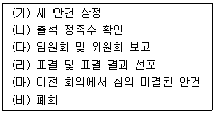
- (다) – (가) – (나) – (마) – (라) - (바)
- (나) – (마) – (다) – (가) – (라) - (바)
- (나) – (다) – (마) – (가) – (라) - (바)
- (다) – (나) – (마) – (가) – (라) - (바)
(정답률: 45%)
6. 새진식품 이건오 상무 비서로 근무하는 이동주 비서는 신제품 홍보 업체 선정을 위한 PT회의를 준비하고 있다. 아래는 회의참석자 명단이다. 다음 중 비서의 내방객 응대에 대한 설명으로 가장 적절한 것은?
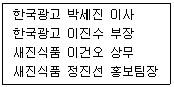
- 회의실 안내 시 박세진 이사 – 이건오 상무 – 이진수 부장 – 정진선 홍보팀장 직급 순으로 회의실 안쪽부터 출입문 가까운 쪽으로 자리를 안내한다.
- 한국광고 방문객이 예정시간보다 10분 일찍 도착하였으나, 상사가 다른 방문객과 면담중이라 방문객들이 대기하고 있는 방으로 안내한다.
- 회의 중 차 대접 순서는 박세진 이사 – 이진수 부장 – 이건오 상무 – 정진선 팀장 순으로 한다.
- 회의가 길어져 상사가 다음 외부약속에 늦을 것 같다고 판단 되면 노크를 하고 들어가 다음 일정 메모를 상사에게 조용히 전한다.
(정답률: 34%)
7. 다음 중 직장 내 인간관계가 다른 집단과의 차별화를 만들어내는 요소의 설명으로 가장 부적절한 것은?
- 사풍과 연관한 독특한 인간관계의 분위기 존재
- 명확한 상하관계 위주의 구성
- 어떠한 목표달성을 위하여 집합된 집단
- 각양각색의 사람들로 구성되어 개성이 우선시 된다는 점
(정답률: 43%)
8. 비서의 다이어리 사용법으로 가장 적절한 것은?
- 다이어리는 다른 사람이 보지 않도록 관리한다.
- 일정이 변경된 경우 이전의 일정을 지우고 새로 작성한다.
- 회사의 주요 행사 일정 수립 시 상사의 개인적인 일정은 추후 고려한다.
- 다이어리는 1년 주기로 사용하고 1년 후 폐기한다.
(정답률: 77%)
9. 상사의 출장업무 지원을 위한 숙박시설 예약 시 주의해야 할 내용이다. 가장 적절한 설명으로만 짝지어진 것은?
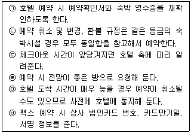
- ㉠, ㉡
- ㉢, ㉣
- ㉤, ㉥
- ㉠, ㉣
(정답률: 31%)
10. 장기간의 복잡한 일정의 출장을 관리하는 김비서의 업무처리 방식으로 가장 적절하지 않은 것은?
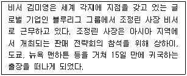
- 항공편 예약 시 도착 공항명을 고려한다.
- 상사 선호도를 우선 고려하여 좌석 등급과 좌석 배치를 선택하였다.
- 여권 유효기간이 최소한 6개월 이상 남아 있는지를 확인하였다.
- 항공 일정 변경에 대비하기 위해 배서(endorsement)가 가능한 항공권 구입 여부를 고려하였다.
(정답률: 47%)
11. DM Company 한국지사장 비서 김정미는 수요일 오전 10시에 있을 매출보고 관련 국제전화회의를 준비하고 있다. 김비서의 회의 준비 방법으로 가장 적절하지 않은 것은?
- 회의 자료를 e-mail로 수요일 아침 회의 시작 1시간 전에 전송하였다.
- 오전 10시 시작이므로 10분 전에 미리 전화를 연결하고 대기하였다.
- 각 회의 참석자들에게 미리 연락하여 회의시각 확인과 참석 여부를 회신 받았다.
- 회의 중 상사 집무실의 키폰은 착신거부 기능을 사용하여 벨이 울리지 않도록 하였다.
(정답률: 57%)
12. 다음은 초대장에 대한 설명이다. 가장 바르게 설명된 것은?
- 턱시도는 오후 6시 이후에 입는 정장이라는 뜻에서 After Six 라고도 부른다.
- 연미복을 입을 경우 실내 행사에서 반드시 실크 해트(silk hat)를 착용해야 한다.
- 초대장에 informal이라고 표시되어 있으면 파티가 비공식 파티임을 뜻한다.
- 초대장에 White Tie라고 적혀 있을 경우에는 블랙과 흰색의 타이착용을 의미한다.
(정답률: 23%)
13. 다음은 다국적기업 JS Company의 김홍철 사장의 각 지사 사장단들이 참석하는 아시아태평양지역 마케팅 회의 참석을 위해 한진영 비서가 항공편과 숙소를 예약한 내용이다. 한 비서가 김사장의 출장일정을 보좌하기 위한 업무 준비로 가장 적절한 것은?
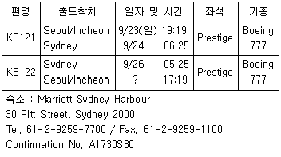
- 출장비는 9월 23일 오전 중에 US달러로 환전하여 전달해 드렸다.
- 시드니의 호텔은 4박 일정으로 예약하였다.
- 김홍철 사장의 항공편은 국적기 1등석 좌석으로 다시 한번 확인하였다.
- 호주와의 시차를 고려하여 상사 귀국 후 업무 일정은 27일부터 잡았다.
(정답률: 25%)
14. 사장님이 다음과 같은 업무 지시를 하였고 나는 현재 금일 오후 2시까지 회장님의 지시사항을 이행해야 한다. 비서의 대응태도로 우선적으로 시행해야할 것으로 가장 적절한 것은?
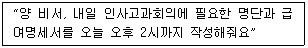
- “예, 알겠습니다. 사장님. 작성하여 드리겠습니다.” 일단 상사의 지시를 받고 무조건 일정에 맞추도록 한다.
- “명단과 급여명세서를 어떤 기준으로 작성해 드릴까요?” 먼저 원하는 보고양식을 확인한 후 사정을 말씀드린다.
- “죄송합니다만 지금은 회장님께서 지시하신 업무를 2시까지 마쳐야 합니다. 2시 이후에 업무 시작이 가능합니다.” 현재 내 업무 상태를 말씀드린다.
- “급여명세서는 제가 직접 관리하지 않아 자료가 없습니다. 제가 작성하기 어려울 것 같습니다.” 본인의 업무영역에 대한 명확한 설명을 드린다.
(정답률: 59%)
15. 다음 한자와 의미에 대한 설명이 틀린 것은?
- 祝 零錢 : 더 좋은 자리로 전임할 때
- 祝 就任 : 맡은 자리에 처음으로 일하러 나아갈 때
- 祝 開業 : 영업시작을 축하할 때
- 祝 華婚 : 혼사를 축하할 때
(정답률: 20%)
16. 상사의 개인정보관리에 대한 설명이다. 가장 부적절한 설명을 고르시오.
- 상사의 개인파일은 컴퓨터에 암호화하여 보관하도록 한다.
- 학력, 경력, 공적 수상내역 등은 상사의 이력으로 기록해 두어야 한다.
- 상사의 와이셔츠와 신발 사이즈, 취미 등의 사적인 부분은 비서가 기록하지 않아도 된다.
- 상사가 가입한 각종 단체 등의 회원가입 여부 및 회비납부 현황, 회원번호 등은 기록해서 관리한다.
(정답률: 74%)
17. 다음의 상황을 읽고 바르게 설명된 것을 고르시오.
- 사내 임직원 워크샵을 위한 숙박시설 예약 시 비용절감을 위해 일정 직급 이하의 직원들은 트윈룸(twin room)을 고려하였다.
- 해외 출장 중인 상사가 이른 아침 이동을 편하게 할 수 있도록 room-to-room call을 요청해 두었다.
- 상사가 조용히 휴식을 취할 수 있도록 침실과 거실이 별도로 분리된 커넥팅 룸(connecting room)을 예약하였다.
- 한국에 처음 방문한 외국인 방문객이 휴일에 시내 관광을 할 수 있도록 pressing service를 요청하였다.
(정답률: 56%)
18. 다음 중 온라인 상에서 상사의 평판관리를 담당하는 비서의 홍보 관련업무 중 가장 적절한 활동을 고르시오.
- 상사의 인간적인 면을 부각시키고자 평소 자주 참여하는 정치활동의 사진과 내용을 SNS에 남겼다.
- 상사가 경험한 공공기관의 부적절한 서비스 행태를 실명 게시하며 상사의 개선안을 함께 제안하였다.
- 많은 팔로워들의 의견을 공유하고자 현재 논쟁거리가 되는 사회적이슈를 제시하고 방문자들의 참여율을 높인다.
- 최근 개최된 사내 신기술 관련 워크샵의 사진 및 주제, 토론 내용을 상세히 게재하며 기업의 다양한 교육활동을 적극적으로 소개한다.
(정답률: 12%)
19. 다음은 비서의 업무일지 혹은 업무매뉴얼 작성에 대한 설명이다. 가장 부절적한 내용을
- 업무일지를 작성할 때 업무의 유형을 분류할 수 있고, 업무 일지의 내용은 직무평가 때 근거 자료로 활용이 가능하다.
- 업무일지는 업무효율화 차원에서 업무개선을 위한 자료로 활용이 가능하다.
- 업무매뉴얼은 비서가 예기치 못한 일로 자리를 비우거나 자신의 업무를 대리로 수행할 사람을 위해 효과적으로 활용할 수 있다.
- 업무매뉴얼은 공개적인 자료이므로 타부서와 공유하여 상사와의 업무를 원활하게 할 수 있다.
(정답률: 62%)
2과목: 경영일반
20. SWOT분석에서 “자사제품에 대한 고객 충성도가 낮고 타사제품으로의 전환비용(switching cost)이 낮다” 라는 문제가 해당하는 것으로 가장 적절한 것은?
- 강점(Strength)
- 약점(Weakness)
- 기회(Opportunity)
- 위협(Threat)
(정답률: 73%)
21. 경쟁자는 외부직접환경을 구성하는 중요한 요인이 된다. 다음 중 특정산업 내에서의 경쟁강도를 설명한 것으로 가장 적절하지 않은 것은?
- 시장 점유율이 비슷한 경우 경쟁강도가 높아진다.
- 당해 산업성장률이 높은 경우 경쟁강도가 높아진다.
- 시장 진입장벽이 낮은 산업일수록 경쟁강도가 높아진다.
- 대체재가 많은 제품일수록 경쟁강도가 높아진다.
(정답률: 34%)
22. 기업의 사회적 책임에 대한 설명으로 가장 적절하지 않은 것은?
- 기업은 경영활동에 관련된 의사결정이 특정 개인이나 사회전반에 미칠 수 있는 영향을 고려해야 하는 의무가 있는데, 이를 기업의 사회적 책임이라고 한다.
- 기업이 사회적 책임을 이행하면 사회 또는 고객으로부터 두터운 신뢰와 좋은 평판을 얻게 되어 매출에 긍정적으로 작용할 수 있는 이점이 있다.
- 기업의 사회적 책임에는 기업의 유지 및 발전에 대한 책임, 환경에 대한 책임, 공정경쟁의 책임, 지역사회에 대한 책임 등이 포함된다.
- 기업은 최대이윤을 확보함으로써 기업을 유지 발전시켜야 하는 책임이 있다.
(정답률: 58%)
23. 다음의 보기에서 중소기업의 특징을 모은 것으로 가장 적절한 것은?
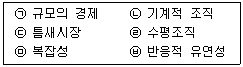
- ㉡, ㉢,㉤
- ㉢, ㉣, ㉥
- ㉠, ㉣, ㉥
- ㉠, ㉡, ㉤
(정답률: 66%)
24. 다음 중 벤처기업의 일반적 특징으로 가장 적절하지 않은 것은?
- 벤처기업은 주로 고수익, 고위험 사업을 수행하는 편이다.
- 벤처기업은 총 매출액 대비 기술개발의 비율이 높다.
- 벤처기업은 신속한 의사결정이 용이하고 강한 추진력을 갖고 있다.
- 벤처기업은 소자본 창업형태로 내부자원에 의존하므로 부가가치율이 낮은 편이다.
(정답률: 52%)
25. 무한책임사원과 유한책임사원으로 구성되는 이원적인 회사로, 무한책임사원이 경영을 담당하며 유한책임사원은 지분만 참여하는 형태의 회사는 다음 중 무엇인가?
- 합명회사
- 합자회사
- 유한회사
- 주식회사
(정답률: 59%)
26. 다음의 주식회사에 대한 설명 중 가장 적절한 것은?
- 주식회사의 3대 기관은 주주총회, 이사 및 이사회, 감사이다.
- 주식회사는 출자자의 지분을 증권화하여 모든 출자자가 무한책임을 지도록 한다.
- 주식회사의 감사는 회계 및 업무감사를 주 업무로 하고 상설 되지 않아도 되는 선택기관이다.
- 주식회사는 기업을 공개할 의무가 면제됨으로써 정부의 제도적 규제를 적게 받는다.
(정답률: 54%)
27. 다음 중 경영관리활동의 기능에 대한 설명으로 가장 적절하지 않은 것은?
- 계획활동은 조직의 목표를 달성하기 위한 행동방안을 선택하는 모든 활동을 포함한다.
- 지휘활동은 업무를 세분화하고 자원을 배분하고 조정하는 활동이라 할 수 있다.
- 통제활동은 수행되는 일들이 계획에 일치되도록 조직과 개인의 성과를 측정하고 수정하는 관리기능이다.
- 조직화활동은 구성원들이 좋은 성과를 낼 수 있는 조직구조를 설정해 가는 과정이다.
(정답률: 40%)
28. 조직 규모나 업무 범위를 줄이고자 하는 노력으로 다음 중 가장 적절하지 않은 것은?
- 아웃소싱
- 다운사이징
- 스핀오프(Spin off)
- 수직적 통합
(정답률: 30%)
29. 다음에서 설명하는 동기부여 이론은 무엇인가?
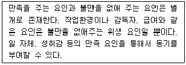
- XY 이론
- ERG 이론
- 2요인 이론
- 기대이론
(정답률: 37%)
30. 사원 A씨는 능력이 있으나 일에 대한 의욕이나 의지가 부족한 편이다. 허시와 블랜차드의 상황적 리더십 스타일 중 A씨의 상사가 리더십효과를 높이기 위해 선택할 수 있는 가장 적절한
- 거래적 리더십
- 설득적 리더십
- 과업주도형 리더십
- 참여형 리더십
(정답률: 48%)
31. 마케팅 계획 수립을 위해 시장 환경을 구성하는 핵심적인 3가지 요인을 분석하는 것을 3C 석이라고 한다. 다음 중 3C분석의 대상으로서 가장 적절하지 않은 것은?
- 자사 분석(Company)
- 경쟁자 분석(Competitor)
- 고객 분석(Customer)
- 원가 분석(Cost)
(정답률: 52%)
32. 급여 지급시에 소득세, 국민연금, 건강보험료 등을 미리 공제하는 것으로 다음 중 가장 적절한 용어는 무엇인가?
- 연말정산
- 원천징수
- 소득공제
- 세액공제
(정답률: 56%)
33. 다음 중 노동조합의 활동에 대한 설명으로 가장 적절하지 않은 것은?
- 노동조합은 파업이나 태업으로 사용자를 압박할 수 있으나 파업 자체는 불법적행위로 간주되어 법적, 행정적 제재를 받게 된다.
- 노동조합은 사용자측에 단체교섭을 요구할 수 있으며 사용자가 이에 응하지 않으면 사용자는 부당노동행위를 한 것으로 간주된다.
- 노동조합은 정치적 영향력 확대를 통해 노동자들의 권익을 증진시키려는 노력을 한다.
- 근로조건개선과 임금인상 등이 단체교섭의 대상이 될 수 있다.
(정답률: 28%)
34. 기업의 경쟁력을 높이기 위해 기업내 모든 인적, 물적 자원을 통합적으로 관리하는 통합정보시스템을 무엇이라 하는가?
- EIS
- ERP
- SIS
- DSS
(정답률: 64%)
35. 다음 자료를 통해 매출총이익을 계산하면 얼마인가?
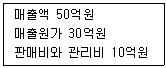
- 10억원
- 20억원
- 30억원
- 40억원
(정답률: 30%)
36. 다음에서 설명하는 시사용어로 가장 적절한 것은?
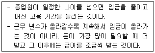
- 비정규직 차별방지법
- 최저임금제
- 임금피크제
- 연봉제
(정답률: 70%)
37. 다음에서 설명하는 시사용어로 가장 적절한 것은?
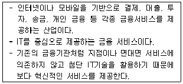
- 핀테크
- 인터넷 뱅킹
- 사물인터넷
- 크라우드 펀딩
(정답률: 22%)
38. 최근 파워블로거를 활용해 자발적으로 기업이나 제품의 홍보를 하도록 만드는 마케팅 기법이 인터넷 광고기법으로 주목받고 있다. 즉 네티즌이 이메일이나 메신저, 블로그 등을 통해 자발적으로 홍보하도록 만드는 기법을 나타내는 용어로 가장 적절한 것은?
- 바이럴마케팅
- 센트마케팅
- 풀마케팅
- 그린마케팅
(정답률: 53%)
39. 특정한 사업목표를 달성하기 위해 임시적으로 조직 내의 인적, 물적 자원을 결합하여 구성된 조직으로 가장 적절한 것은?
- 사업부제 조직
- 팀 조직
- 프로젝트 조직
- 위원회 조직
(정답률: 64%)
3과목: 사무영어
40. Choose the one which the following letter is most likely addressed to.
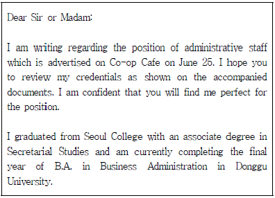
- Marketing Department
- Procurement Team
- Human Resources Manager
- General Affairs Department
(정답률: 54%)
41. 다음 사무용어의 약어가 바르게 풀이 되지 않은 것은?
- FYI - For Your Information
- VIP - Very Interesting Person
- WPM - Words Per Minute
- FAQ - Frequently Asked Question
(정답률: 62%)
42. Choose one phrase which has a grammatical error.
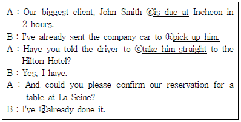
- ⓐ is due at
- ⓑ pick up him
- ⓒ take him straight
- ⓓ already done it
(정답률: 21%)
43. Which set of words is most appropriate to fill in the blanks ⓐ and ⓑ?
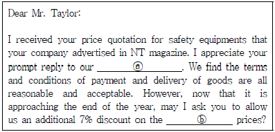
- inquiry, quoted
- letter, quoting
- request, quotationed
- fax, quotation to make
(정답률: 46%)
44. Choose the correct inside address in a business letter.
- Mr. Peter Lee,
Our Life Inc.
Sales Manager
1494 Baird St.
Corona, CA 92882 - Mr. Peter Lee,
1494 Baird St.
Corona, CA 92882
Our Life Inc.
Sales Manager - Mr. Peter Lee
Sales Manager
Our Life Inc.
1494 Baird St.
Corona, CA 92882 - Our Life Inc. / Sales Manager
Mr. Peter Lee
Corona, CA 92882
1494 Baird St.
(정답률: 65%)
45. 다음 중 영문 편지의 기본 구성요소에 속하는 것은?
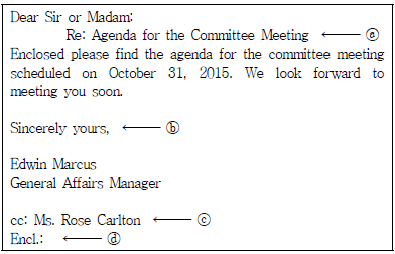
- ⓐ Subject line
- ⓑ Complimentary close
- ⓒ Carbon copy notation
- ⓓ Enclosure notation
(정답률: 53%)
46. Read the following invitation and choose one which is the most true.
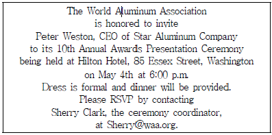
- Mr. Weston invited some executives of The World Aluminum Association.
- This event will take place on the 10th of May.
- Casual clothing will not be appropriate.
- Someone will take presentation at the Hilton Hotel.
(정답률: 14%)
47. Read the following extract from an e-mail, choose one which is not true.
- The guests will stay at the hotel 4 nights.
- He will check in June 2.
- The type of the room the guest requested is twin.
- Mr. Johnson will stay at the hotel with another guest.
(정답률: 43%)
48. What type of business communication is the following passage?
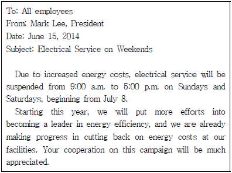
- manual
- formal business letter
- internal memorandum
- brochure
(정답률: 30%)
49. Read the following extracts from a presentation and choose one which is not appropriate phrase for the blanks ⓐ~ⓓ.
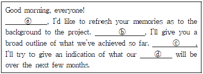
- ⓐ First of all
- ⓑ May I begin
- ⓒ Finally
- ⓓ priorities
(정답률: 47%)
50. Read the following chart and choose one which is the most true.
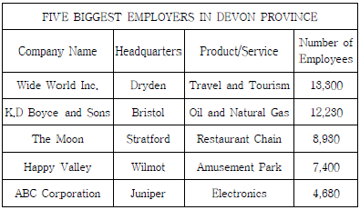
- Happy Valley produces natural gas.
- The main office of Wide World Inc. is in Wilmot.
- ABC Co. is not the one of the five biggest employers in Devon.
- Thanks to Happy Valley, children can enjoy going on the rides.
(정답률: 43%)
51. Read the following conversation and choose one which is true.
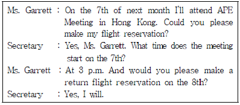
- Ms. Garrett is supposed to participate in a meeting on the 8th of next month.
- The secretary has already made a reservation.
- It is an open-ended ticket.
- Ms. Garrett will take two days' business trip to Hong Kong.
(정답률: 34%)
52. Which of the followings does not match the underlined ⓐ~ⓓ?
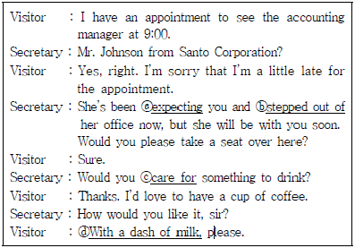
- ⓐ : waiting for
- ⓑ : left
- ⓒ : like to have
- ⓓ : Black
(정답률: 40%)
53. Read the following conversation and which of the followings is the most appropriate for the blank ⓐ and ⓑ?
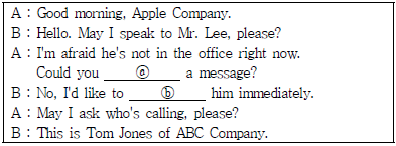
- take - get in
- receive - contact
- leave - reach
- make - make a call
(정답률: 46%)
54. Which of the followings is the most appropriate for the blank ⓐ?(55번 공통지문 문제)
- validate
- contact
- represent
- coordinate
(정답률: 32%)
55. Which of the followings shows the correct note taken during the conversation?
- PA 2325, 2010 Maple St., Saint Paul, MD
- PA 3325, 2010 Maple St., St. Paul, MD
- PA 3325, 2000 Maple St., Saint Paul, MD
- PA 2325, 2010 Maple St., St. Paul, MD
(정답률: 25%)
56. Look at the airline e-ticket and choose one which is not true.
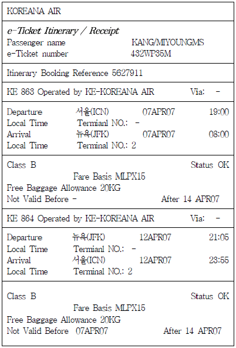
- The departure time from New York is 9:⑤p.m. local time.
- It is an open-ended ticket.
- The passenger is using KOREANA AIR for the trip.
- The gender of the passenger is female.
(정답률: 29%)
57. Read the following sentences and choose a set which is arranged in the right order.
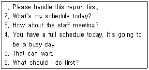
- 6 – 3 – 2 – 1 – 4 – 5
- 2 – 4 – 6 – 1 – 3 - 5
- 4 – 5 – 6 – 1 – 2 – 3
- 2 – 4 – 1 – 3 – 5 – 6
(정답률: 46%)
58. Read the conversation below and choose one which is not true.
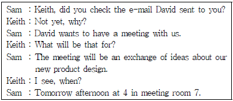
- David will be in a meeting held tomorrow afternoon.
- Sam sent an e-mail to Keith instead of David.
- David initiated the meeting to share ideas about new product design.
- Keith has not checked the e-mail yet David sent.
(정답률: 50%)
4과목: 사무정보관리
59. 관공서에 근무하는 나비서는 공문서 작성 업무를 수행하고 있다. 공문서 작성에 관한 설명 중 가장 적절하지 않은 것은?
- 공문서에는 음성 정보나 영상 정보 등이 수록되거나 연계된 바코드 등을 표기할 수 있다.
- 공문서에 쓰는 날짜는 숫자로 표기하되, 연·월·일의 글자는 생략하고 그 자리에 온점을 찍어 표시한다.
- 시·분은 12시간제에 따라 숫자로 표기하되, 시·분의 글자는 생략하고 그 사이에 쌍점을 찍어 구분한다.
- 공문서 작성에 사용하는 용지는 특별한 사유가 없으면 A4크기의 직사각형 용지로 한다.
(정답률: 37%)
60. 다음 박비서의 업무처리 중에서 가장 바람직하지 않은 것은?
- 'Via Air Mail' 이라고 표기된 편지는 개봉하지 않고 상사에게 전했다.
- 'Registered'라고 표기된 편지는 등기우편으로 취급하였다.
- 'Private'라고 표기된 편지를 개봉하지 않고 직접 상사에게 전했다.
- 'Confidential'이라고 표기된 편지를 상사에게 전하였다.
(정답률: 37%)
61. 법률비서 이민정은 문서 분류 업무를 수행하고 있다. 다음 중 가장 적절하지 않은 것은?
- 주제별 분류는 분류자에 따라 달라질 수 있으므로 미리 주제 결정 방식을 만들어둔다.
- 개인명 또는 조직명으로 언급되지 않는 문서를 정리하는 경우 주제별 분류를 사용한다.
- 지역별 분류는 분류 후에 제목이나 이름으로 가나다순 배열해야 하기 때문에 착오가 생기지 않는다.
- 지역별 분류는 분류 명칭과 지역을 모르는 경우에는 찾기 힘든 단점이 있다.
(정답률: 27%)
62. 다음 중 전자문서 관리시스템의 특징에 대한 설명으로 가장 적절하지 않은 것은?
- 문서의 신속한 조회와 검색이 가능하다.
- 종이문서의 감소로 사무환경이 개선된다.
- 데이터의 중복을 최소화할 수 있다.
- 보안이 철저하여 문서 작성자의 익명성이 보장된다.
(정답률: 55%)
63. 프레젠테이션을 위해 시각자료를 준비하고 있다. 다음 설명 중 가장 적절하지 않은 것은?
- 프레젠테이션시 가급적많은 시각자료를 활용하는 것이 중요하다.
- 숫자는 도표보다 그래프화하는 것이 효율적이다.
- 슬라이드별로 서로 다른 디자인을 적용하는 것은 산만하므로 좋지 않다.
- 명조체보다 글자에 각이 진 고딕체가 더 선명하다.
(정답률: 56%)
64. 인터넷 기술을 기업 내 정보시스템에 적용한 것으로 전자우편 시스템, 전자결재 시스템 등을 인터넷 환경으로 통합하여 사용하는 것을 무엇이라고 하는가?
- 인트라넷
- 엑스트라넷
- 원격접속
- 블루투스
(정답률: 53%)
65. 다음 중 명함관리 프로그램에 대한 설명으로 가장 옳지 않은 것은?
- 명함의 내용을 프로그램에 직접 입력하거나 명함 이미지를 스캔하여 관리한다.
- 명함관리 프로그램으로 입력된 내용은 수정이 어려우므로 변경 사항이 생기면 삭제 후 재입력한다.
- 명함관리 프로그램으로 입력된 내용 중 필요한 자료를 검색하는 것이 가능하다.
- 명함관리 프로그램에 입력된 내용은 다른 프로그램과 연계하여 라벨출력이 가능하다.
(정답률: 62%)
66. 아래의 설명에 해당하는 서비스로 가장 적절한 것은?
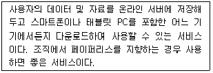
- 소셜네트워크 서비스
- 클라우드 서비스
- IRC 서비스
- Veronica 서비스
(정답률: 64%)
67. 다음 기기 중 성격이 다른 하나는?
- USB 드라이브
- Blu-ray 디스크
- Flash Memory Card
- Memory Stick
(정답률: 48%)
68. 전자우편 메시지 작성에 관한 설명으로 가장 적절하지 않은 것은?
- HTML기반의 메시지는 지원하지 않는다.
- 스타일화된 형식을 사용할 수 있다.
- 링크 및 그림 등을 포함할 수 있다.
- 첨부파일은 파일형식에 구애받지 않는다.
(정답률: 27%)
69. 다음은 전자문서에 관한 설명이다. 가장 적절하지 않은 것은?
- 문서 등급에 따라 접근자의 범위와 열람 권한을 지정해야 한다.
- 공개 구분란에 공개, 부분공개, 비공개로 표기한다.
- 결재권자가 전자 서명하여 결재하면 암호입력의 방식으로 처리된다.
- 결재 중에는 문서의 일부를 수정할 수 없다.
(정답률: 39%)
70. 김혜주 비서는 사무생산성을 높이고자 상사실과 비서실의 쾌적한 사무실 환경 관리에 신경을 쓰고 있다. 다음 중 가장 적절하지 않은 것은?
- 자연채광을 적절하게 사용할 수 있는 방법을 모색하며, 인공 조명도 조합해서 사용한다.
- 고온일때는 습도를 높이고, 저온일때는 습도를 낮추는 공기조절을 하여 쾌적함을 높인다.
- 외부소음이 심한 곳은 이중창문이나 커튼 등을 이용하여 소음이 들어오지 않도록 노력한다.
- 직접조명과 간접조명을 적절히 조합하여 사용하여 눈부시지 않으면서 조도도 확보한다.
(정답률: 80%)
71. 다음 중 사무실에서의 소음을 줄이기 위한 방법으로 가장 바람직 하지 않은 것은?
- 외부 방문객의 출입이 잦은 영업부서를 출입구 근처에 배치하였다.
- 개방식 구조여서 소음이 심한 기기를 한 곳에 집중시키고 유리벽을 설치하였다.
- 사무실에 탄력성 낮은 소재의 바닥재를 깔아 소음을 흡수하게 하였다.
- 업무의 동선을 가급적 짧게하여 이동을 줄일 수 있게 하였다.
(정답률: 32%)
72. 다음 공문서 결재 상황에 관하여 가장 적절하게 설명한 것은?
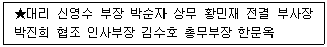
- 신영수 대리가 이 공문서를 발의하여 기안하였다.
- 이 문서는 인사부와 총무부가 협조하여 공동으로 기안한 것이다.
- 사장님은 부재중이라서 박진희 부사장이 전결하였다.
- 신영수 대리의 직속상사는 김수호 부장이다.
(정답률: 47%)
73. 다음은 올해 주택매매거래량에 관한 그래프이다. 아래 그래프를 보고 알 수 있는 내용으로 가장 옳지 않은 것은?
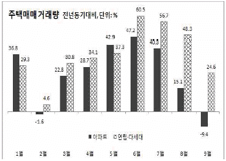
- 올해 9월은 아파트 매매거래량이 전년동기 대비 감소했다.
- 작년에 비해서 연립·다세대 매매거래량이 가장 많이 증가한 달은 6월이다.
- 올해 아파트 매매거래량이 연립·다세대 매매거래량을 초과했던 달은 5월이다.
- 전년도에 비해서 연립·다세대 매매거래량이 증가세에 있다.
(정답률: 42%)
74. 파일링을 할 때 사용하는 도구에 대한 설명으로 가장 올바르지 않은 것은?
- 이름표(label) : 폴더의 탭 또는 귀에 붙이는 종이이다.
- 스테이플러(stapler) : 여러 장의 종이를 철침을 이용하여 철할 때 사용한다.
- 패스너(fastener) : 문서에 철을 하려할 때 구멍을 뚫는 기구이다.
- 제침기(remover) : 스테이플러의 침을 떼어낼 때 사용하는 기구이다.
(정답률: 47%)
75. 다음 중 신문 스크랩과 관련된 비서의 행동으로 가장 적절하지 않은 것은?
- 황비서는 신문스크랩을 할 때 몇 가지 주제로 구분하여 정리한다.
- 강비서는 기사 스크랩을 할 때 출처와 날짜 정보를 함께 기입한다.
- 남비서는 상사가 기사 스크랩을 지시하면 본래의 기사와 관련 내용을 찾아 함께 스크랩한다.
- 장비서는 스크랩한 기사를 모두 날짜별로 정리하여 최근 것이 가장 앞쪽에 오도록 한다.
(정답률: 39%)
76. 상공산업 대표이사의 장비서는 신제품 발표회에 관한 안내문을 만들어 500명의 수신자들에게 각각 개별적으로 수신자들의 이름을 문서마다 명시하여 보내려고 한다. 장비서가 안내문을 작성하기 위해 활용할 수 있는 기능으로 가장 적절한 것은?
- 라벨링
- 메일머지
- 데이터 파일
- 매크로
(정답률: 75%)
77. 다음 중 수신 문서의 처리방법에 대한 설명으로 가장 적절하지 않은 것은?
- 김비서는 수신된 견적서의 견적금액을 계산기로 꼭 확인한 후 상사에게 드린다.
- 최비서는 상사 부재 시 우편물을 폴더에 넣어 책상 위에 놓아둔다.
- 남비서는 사후 처리가 필요한 문서는 메모해서 티클러 파일의 필요 날짜에 끼워둔다.
- 황비서는 우편물이 수신되면 모두 봉투를 개봉한 후 바로 상사에게 전달한다.
(정답률: 57%)
78. 서비스기업 비서인 박희진 비서는 회사와 관련 있는 기사를 매일 아침 스크랩하여 상사에게 분석 보고를 한다. 다음 중 기사의 내용과 가장 거리가 먼 것은?
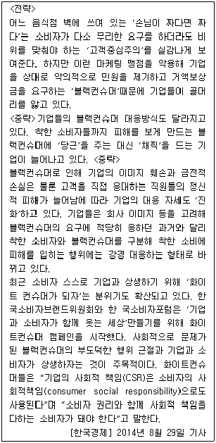
- 블랙컨슈머는 구매한 상품의 하자를 문제 삼아 기업을 상대로 돈을 뜯어내는 소비자를 말한다.
- 기업은 블랙컨슈머들이 골칫거리이므로 최근에는 블랙컨슈머의 요구에 적당히 응하고 있다.
- 화이트컨슈머는 기업과 상생하고자 하는 착한 소비자이다.
- 화이트컨슈머 캠페인은 블랙컨슈머의 부도덕한 행위 근절과 기업과 소비자가 상생하고자 하는 것이 주목적이다.
(정답률: 53%)